Distributor Alignment and Teaching Procedure
Parts and Materials Required
- Allen wrench, 4 mm
- Sharpie pen
- 30 cm ruler
Time Required
- 45 minutes
With the Input Queue Auto Teach Tool
Without the Input Queue Auto Teach Tool
 Setting Up for Alignment
Setting Up for Alignment
- Carefully open the Service Drawer.
Note—Before opening the Service Drawer, carefully remove the luminometer injectors. - Start up Service Software.
- Select the 1. Distributor tab.
- Select the Main tab.
- Select Distributor from the drop-down menu.
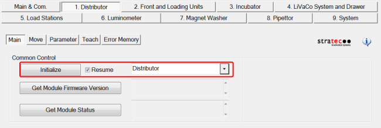
Setting the Authorization Code
- Navigate to the Distributor Parameter tab.
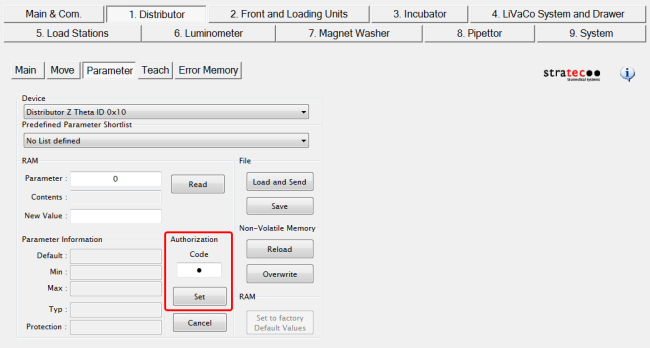
- This will allow manual teaching of the Distributor to the Input Queue.
Distributor Alignment to the MTU Input Queue

Note—
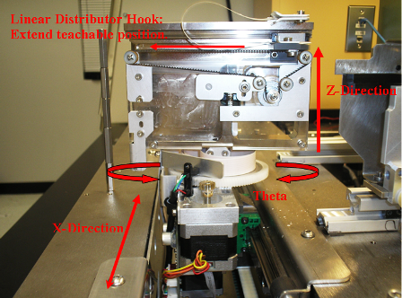
Note—The Distributor needs to be taught to the Input Queue first, before it is taught to any other module.
- In Service Software, navigate to the Distributor Teach tab.
(Or single-click "Move Theta & Z & X..." and click Execute.)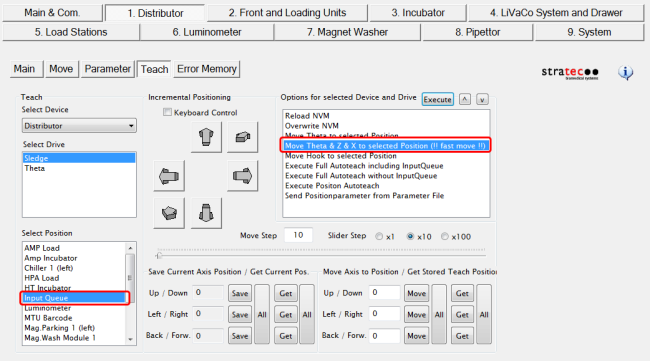
The Distributor moves to the MTU
Note: Determine the appropriate Service Software version and follow the appropriate procedure below.
- On the Teach tab, under Select Drive, select Theta to display Theta teaching Options.
- Use a ruler and the Luminometer module as a reference to align the Distributor in the Theta direction.
- Measure the distance between the Luminometer and the back end of the Distributor.
- Move the ruler to the front end of the Distributor and measure the distance.
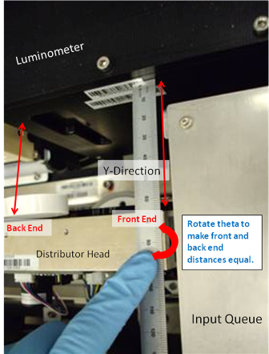
- Once the Distributor is parallel to the Luminometer, press Save (under Save Current Axis Position) to save the Theta position.
- Permanently write the new Theta values to the non volatile memory (NVM) by selecting the Overwrite NVM option and Execute.
Note—Any values that are saved, but not written to the NVM will be erased on the next power cycle of the system. 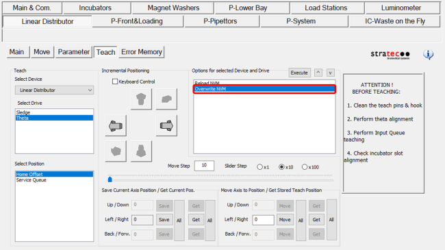
- Next, you MUST calculate Theta for all other modules.
- Calculate Theta for all other modules by selecting Calculate and set other Positions then Execute.
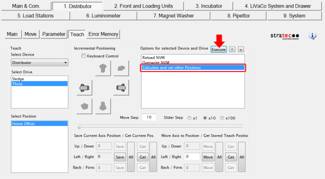
- In the dialog window "Are you sure you want to overwrite all stored theta positions?", click Yes.
- In the dialog window "Do you want to save current Position as Home Position?", click Yes.
- Select Overwrite NVM and then Execute to save these calculated values.
The Calculate and Set other positions button has been removed in SSW v4.0.7.0.
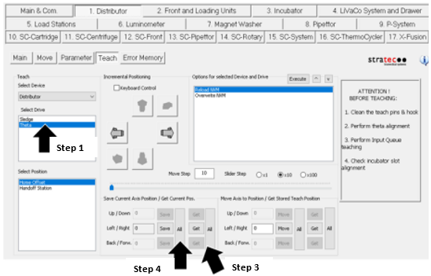
- Use a ruler and the Luminometer module as a reference to align the Distributor in the Theta direction.
- Measure the distance between the Luminometer and the back end of the Distributor.
- Move the ruler to the front end of the Distributor and measure the distance.
- Once the Distributor is parallel to the Luminometer, select Get All (under Get Current Pos.).
- Select Save All (under Save Current Axis Position) to save the Theta position (this will calculate Theta for all other modules).
- Permanently write the new Theta values to the non-volatile memory (NVM) by selecting Overwrite NVM then Execute.Continue to Steps 6-8 to calculate Theta for all other modules.
Note—Any values that are saved, but not written to the NVM will be erased on the next power cycle of the system. - Next, you MUST calculate Theta for all other modules.
- Select Theta under Select Drive,
- Then click “Get All” under “Save Current Axis Position/Get Current Pos.”,
- Then click “Save All”.
- When complete, select Overwrite NVM and then Execute
Note—If teaching Panther Plus, you must install a carrier in the MTU Queue before selecting Push MTU.
Also mark the edges of the tab as shown in the picture. This will make it easier to align the hook to the MTU.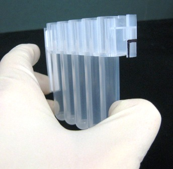
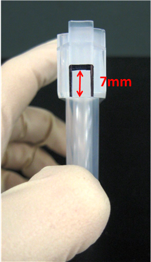
- Click the Main tab.
- From the drop-down menu, select the + next to Front and Loading Units.
- Select MTU Input Queue.
- Select the Initialize button.
- In Service Software, select 1. Distributor > Move > Unlock Drawer to unlock the MTU Input Queue drawer.
- Remove all MTUs from the MTU Input Queue.
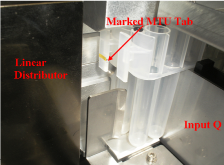
- Select Push MTU on the Distributor Move screen.
- On the Teach tab, under Select Drive select Sledge.
- Under Select Position, select Input Queue.
- Under Options for Selected Device and Drive, double-click Move Hook to selected position (or single-click and select Execute.)
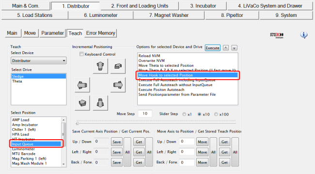
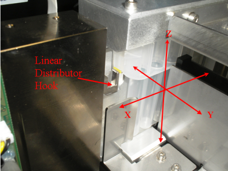
- Observe the hook extension and confirm that the hook does not push against the MTU and move the MTU out of position. If this occurs, teach the hook farther in (to the head of the distributor), reposition the MTU, and reconfirm the teaching, as detailed in the following step.
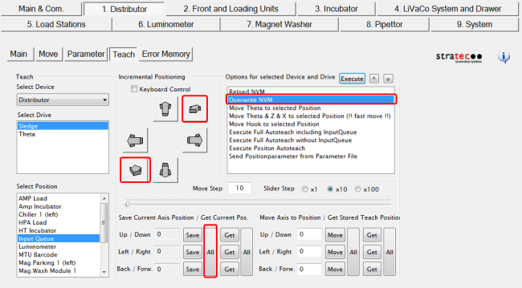
- Select Save to save the new hook extended position. To make the change permanent, double-click Overwrite NVM.
- Retract the hook into the Distributor head by selecting Distributor > Teach > Sledge, and double-clicking Move Theta & Z & X to Selected Position (!!fast move!!).
- Loosen the three screws that secure the MTU Input Queue to the Service Drawer.
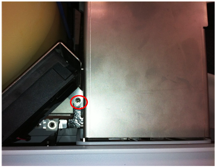
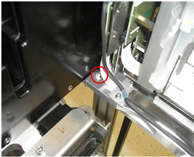
Caution—When accessing the screw that is closest to the Luminometer, be very careful not to let the Allen wrench contact the PCB board, this can short out the board and damage it. - Push down on the red button located on the MTU Input Queue to unlock the MTU drawer.
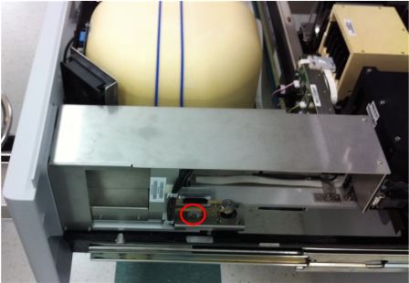
- Close the MTU Input Queue drawer, and confirm that the Input Queue is packed with the marked MTU.
- Select Move Theta & Z & X to selected Position (!!fast move!!).
- Select Move Hook to selected Position.
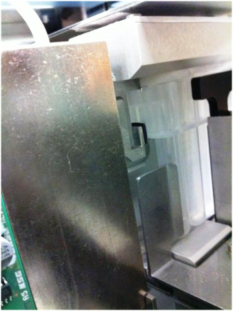
- Once the MTU Input Queue is aligned in the Y-axis, tighten the two accessible screws, making sure not to misalign the module in the process. The third screw will be tightened after the Z-Position teaching is complete.
- Confirm the hook extend position is still valid.
- Select Save All to save the new Distributor Z-axis position. To make the change permanent, select Overwrite NVM.
- Select Move Theta & Z & X to selected position (!!fast move!!) to retract the hook.
- Open the MTU Input Queue drawer and tighten the third MTU Input Queue screw.

Execute Full Autoteach
This procedure describes how to autoteach all modules, except the Input Queue and Service Queue.
Note—Always clean teach pins, the hook, and grounding tab with alcohol before performing any autoteach procedure.
- Ensure the Input Queue has been properly aligned.
- Close the Service Drawer.
- Reinstall the Luminometer Injector.
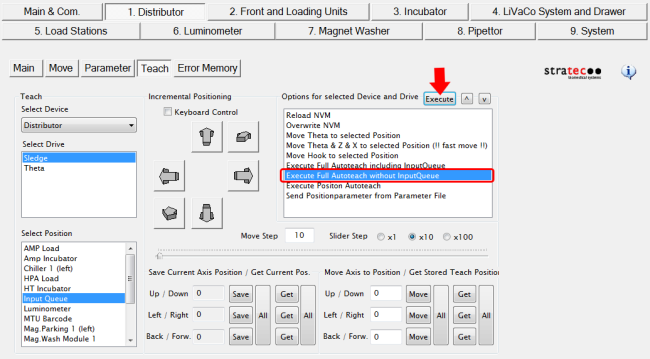
- When the Execute Full Autoteach sequence completes, a Save Parameters to NVM? dialog appears. Select Yes.
Note—If teaching issues persist, it is recommended to perform an Execute Full Autoteach twice, to ensure the most accurate teach parameters are saved. One autoteach sequence may not ensure the hook gets close enough to the teach pin. - Continue to Alignment to the MTU Scanner.
Execute Position Autoteach
This procedure describes how to autoteach one individual module.
Note—It is recommended to always clean teach pins, the hook, and grounding tab with alcohol before performing any autoteach procedure. Note—The Magnetic Wash Stations, Output Queue, and Service Queue can only be taught with the Service Drawer closed.
- Re-initialize the Distributor. (Always re-initialize before individually teaching a module. This prevents potential X-Axis positioning drifts that can occur between modules.)
- Ensure the Input Queue has been properly aligned.
- Close the Service Drawer (if necessary).
- From the Select Position List, select the module to autoteach.
- Double-click Execute Position Autoteach (or single-click and Execute).
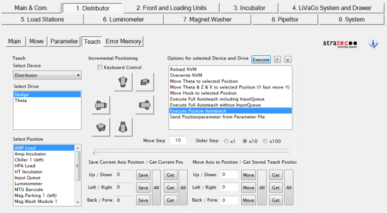
- When the Execute Position Autoteach sequence completes, a Save Parameters to NVM? dialog appears. Select Yes.
Note—If teaching issues persist, it is recommended to perform an Execute Full Autoteach twice, to ensure the most accurate teach parameters are saved. One autoteach sequence may not ensure the hook gets close enough to the teach pin. Distributor Manual Teaching to Any Module
Distributor Alignment to the MTU Scanner
- Continue to Distributor Alignment to the Service Queue.
Distributor Alignment to the Service Queue
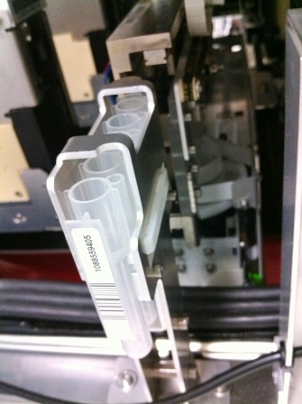
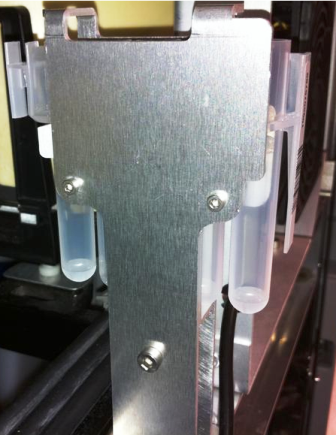
- On the Teach tab, select Service Queue in the Select Position box. Then double-click Move Theta & Z & X to selected Position (!!fast move!!) to move the Distributor to the Service Queue.
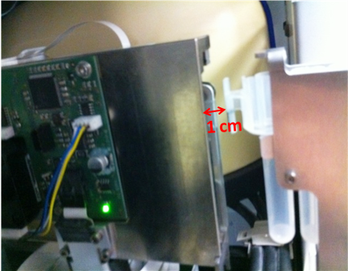
- Select Save to save the new X-Axis position. To make the change permanent, double-click Overwrite NVM and click OK.
- With the Distributor still at the MTU Service Queue position, select Distributor > Teach > Sledge > double-click Move Hook to selected Position.
- Observe the hook extension and confirm that the hook does not push against the MTU and move the MTU out of position. If this occurs, teach the hook farther in (to the head of the distributor), reposition the MTU, and reconfirm the teaching, as detailed in the following step.
- Once the hook is at its extended position, use small steps to move the hook either out or in, until the hook just barely touches the MTU tab.
- Select Save to save the new hook extended position. To make the change permanent, double-click Overwrite NVM and click OK.
- Align the hook with the Up and Down buttons until the hook sits right below the MTU tab 7 mm mark. Select Save to save the new Up/Down position. To make the change permanent, double-click Overwrite NVM and click OK.
- Loosen the mounting screws on the MTU service queue to align the Service Queue to the Distributor hook in the Y-direction.
- Center the MTU to the Distributor hook, then tighten the mounting screws.
- Tighten the Service Queue mounting screws.
- If this is an Installation, continue to Filling the Cooling Module.
 button at the top of the page to send feedback, comments, or change requests.
button at the top of the page to send feedback, comments, or change requests.